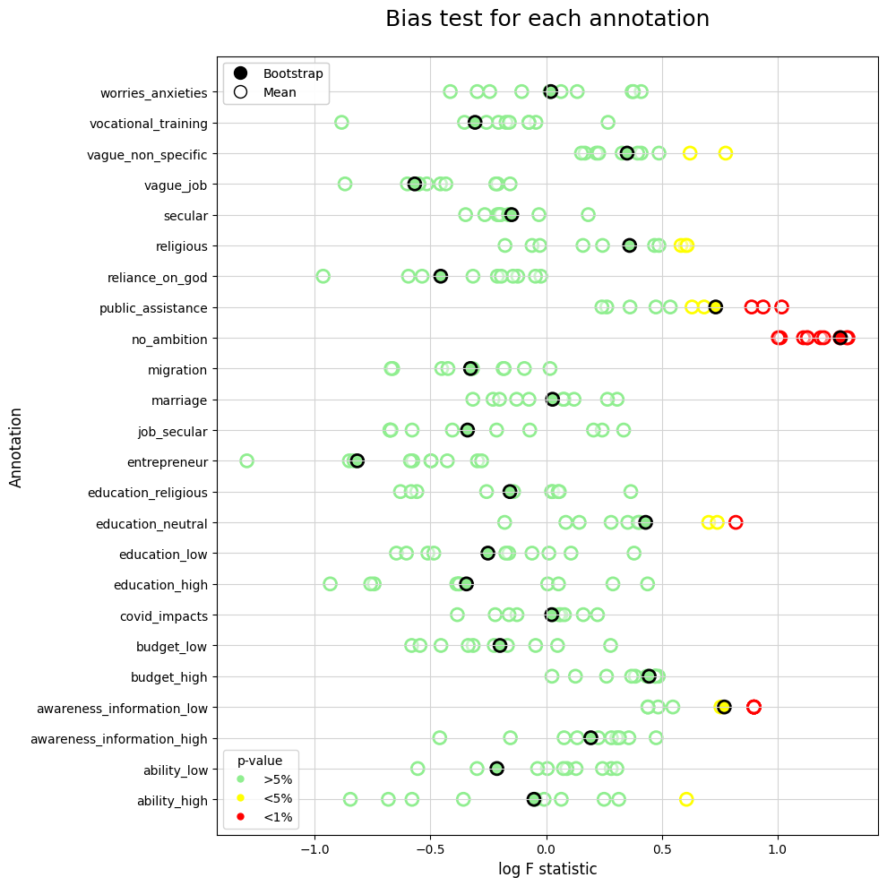

Bias Test
Contents
Bias Test#
Imports#
import os
import numpy as np
import pandas as pd
from iqual import tests
Load datasets#
data_dir = "../../data"
### Enhanced qualitative data
bootstrap_df = pd.read_csv(os.path.join(data_dir,"kfold_enh_pred_mean.csv"))
### Quantitative data
quant_df = pd.read_csv(os.path.join(data_dir,"quant_data.csv"))
annotated_df = bootstrap_df.loc[bootstrap_df.annotated==1].drop(columns=['annotated'])
Merge Data#
data = pd.merge(annotated_df,quant_df,on=['uid','data_round','refugee'],how='left')
Select variables of interest#
categorical_vars = [
'data_round' # Data Round R2 or R3
]
numerical_vars = [
'refugee', # Refugee
'hh_head_sex', # Female HH Head
'eld_sex', # Female eldest child
'parent_reledu', # Religiously educated parent
'num_child', # Number of Children
'hh_head_age', # Age of HH Head
'parent_eduyears', # Parent's years of education
'eld_age', # Age of eldest child
'hh_asset_index', # HH asset index
'hh_income', # HH Income
'int_trauma_exp', # Trauma Experience
]
annotation_vars = [
"ability_high",
"ability_low",
"awareness_information_high",
"awareness_information_low",
"budget_high",
"budget_low",
"covid_impacts",
"education_high",
"education_low",
"education_neutral",
"education_religious",
"entrepreneur",
"job_secular",
"marriage",
"migration",
"no_ambition",
"public_assistance",
"reliance_on_god",
"religious",
"secular",
"vague_job",
"vague_non_specific",
"vocational_training",
"worries_anxieties",
]
Bias tests (For each bootstrap-run)#
datasets = []
for b, boot_df in data.groupby('bootstrap_run'):
bias = tests.Bias(boot_df,
annotation_vars=annotation_vars,
categorical_regressors=categorical_vars,
numerical_regressors=numerical_vars,
)
bias.fit_all()
datasets.extend([{
'bootstrap_run':b,
'annotation':annotation,
'fstat_enh':result.fvalue,
'log_fstat_enh':np.log(result.fvalue),
'pval_enh':result.f_pvalue,
} for annotation, result in bias.model_fits.items()])
bias_df = pd.DataFrame(datasets)
bias_df = bias_df.sort_values('annotation')
Significance#
bias_df['sig_level'] = '>5%'
bias_df.loc[bias_df.pval_enh <= 0.01, 'sig_level'] = '<1%'
bias_df.loc[(bias_df.pval_enh > 0.01) & (bias_df.pval_enh <= 0.05), 'sig_level'] = '<5%'
Bias test (Average across Bootstrap runs)#
grouped_df = data.drop(columns=['bootstrap_run']).groupby(['uid','data_round','refugee'])
avg_data = grouped_df.mean(numeric_only=False).reset_index()
bias = tests.Bias(avg_data,
annotation_vars=annotation_vars,
numerical_regressors=numerical_vars,
categorical_regressors=categorical_vars,
)
bias.fit_all()
bias_avg_df = pd.DataFrame([{
'annotation':annotation,
'fstat_enh':result.fvalue,
'log_fstat_enh':np.log(result.fvalue),
'pval_enh':result.f_pvalue,
} for annotation, result in bias.model_fits.items()])
bias_avg_df = bias_avg_df.sort_values('annotation',ascending=True,ignore_index=True)
Significance#
bias_avg_df['sig_level'] = '>5%'
bias_avg_df.loc[bias_avg_df.pval_enh <= 0.01, 'sig_level'] = '<1%'
bias_avg_df.loc[(bias_avg_df.pval_enh > 0.01) & (bias_avg_df.pval_enh <= 0.05), 'sig_level'] = '<5%'
Plot results#
import matplotlib.pyplot as plt
import matplotlib.patches as mpatches
from matplotlib.lines import Line2D
#### Colors for p-value
pvalue_color_dict = {'>5%':'lightgreen','<5%':'yellow','<1%':'red'}
fig, ax = plt.subplots(figsize=(10,10))
#### Bias (Bootstrap)
ax.scatter(bias_df['log_fstat_enh'], bias_df['annotation'],
s=100,
color=(1,1,1,0.5),
lw=2,
edgecolors=bias_df['sig_level'].replace(pvalue_color_dict),
)
#### Bias (Average)
ax.scatter(bias_avg_df['log_fstat_enh'], bias_avg_df['annotation'],
s=100,
lw=2,
c=bias_avg_df['sig_level'].replace(pvalue_color_dict),
edgecolors='k',
)
# Legend
# 1. Legend for p-value
pval_patches = [
Line2D([0], [0],
marker='.', c=color, lw=0,ms=10,
label=significance,
)
for significance, color in pvalue_color_dict.items() ]
first_legend = plt.legend(handles=pval_patches,title='p-value',loc='lower left')
plt.gca().add_artist(first_legend)
# 2. Legend for Mean/Bootsrap
marker_patches = [
Line2D([0], [0], marker='.', c='k', lw=0, ms=20, label="Bootstrap"),
Line2D([0], [0], marker='o', c='k', lw=0, ms=10, mfc='w', label="Mean")
]
second_legend = plt.legend(handles=marker_patches, loc='upper left')
plt.gca().add_artist(second_legend)
# Axes
ax.grid(True,color='lightgray',)
ax.set_xlabel('log F statistic',fontsize=12)
ax.set_ylabel('Annotation', fontsize=12)
ax.set_title('Bias test for each annotation',fontsize=18, pad=25)
plt.tight_layout()
